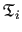

[Abragam, 1961]Abragam61
Abragam, A. (1961).
The Principles of Nuclear Magnetism.
Clarendon Press, Oxford.
[Akaike, 1973]Akaike73
Akaike, H. (1973).
Information theory and an extension of the maximum likelihood
principle.
In: Petrov, B. N. and Csaki, F. (eds.): Proceedings of the
Second International Symposium on Information Theory. Budapest,
pages 267-281, Akademia Kiado.
[Barbato et al., 1992]Barbato92
Barbato, G., Ikura, M., Kay, L. E., Pastor, R. W., and Bax, A. (1992).
Backbone dynamics of calmodulin studied by 15N relaxation using
inverse detected two-dimensional NMR spectroscopy: the central helix is
flexible.
Biochemistry, 31(23), 5269-5278.
(http://dx.doi.org/10.1021/bi00138a00510.1021/bi00138a005).
[Bieri et al., 2011]Bieri11
Bieri, M., d’Auvergne, E., and Gooley, P. (2011).
relaxGUI: a new software for fast and simple NMR relaxation data
analysis and calculation of ps-ns and s motion of proteins.
J. Biomol. NMR, 50, 147-155.
(http://dx.doi.org/10.1007/s10858-011-9509-110.1007/s10858-011-9509-1).
[Bieri and Gooley, 2011]BieriGooley11
Bieri, M. and Gooley, P. R. (2011).
Automated NMR relaxation dispersion data analysis using NESSY.
BMC Bioinformatics, 12, 421.
(http://dx.doi.org/10.1186/1471-2105-12-42110.1186/1471-2105-12-421).
[Bloch, 1946]Bloch46
Bloch, F. (1946).
Nuclear induction.
Phys. Rev., 70(7-8), 460-474.
(http://dx.doi.org/10.1103/PhysRev.70.46010.1103/PhysRev.70.460).
[Bloembergen et al., 1948]Bloembergen48
Bloembergen, N., Purcell, E. M., and Pound, R. V. (1948).
Relaxation effects in nuclear magnetic resonance absorption.
Phys. Rev., 73(7), 679-712.
(http://dx.doi.org/10.1103/PhysRev.73.67910.1103/PhysRev.73.679).
[Broyden, 1970]Broyden70
Broyden, C. G. (1970).
The convergence of a class of double-rank minimization algorithms 1.
General considerations.
J. Inst. Maths. Applics., 6(1), 76-90.
(http://dx.doi.org/10.1093/imamat/6.1.7610.1093/imamat/6.1.76).
[Brüschweiler et al., 1995]Bruschweiler95
Brüschweiler, R., Liao, X., and Wright, P. E. (1995).
Long-range motional restrictions in a multidomain zinc-finger protein
from anisotropic tumbling.
Science, 268(5212), 886-889.
(http://dx.doi.org/10.1126/science.775437510.1126/science.7754375).
[Butterwick et al., 2004]Butterwick04
Butterwick, J. A., Loria, P. J., Astrof, N. S., Kroenke, C. D., Cole, R.,
Rance, M., and Palmer, 3rd, A. G. (2004).
Multiple time scale backbone dynamics of homologous thermophilic and
mesophilic ribonuclease HI enzymes.
J. Mol. Biol., 339(4), 855-871.
(http://dx.doi.org/10.1016/j.jmb.2004.03.05510.1016/j.jmb.2004.03.055).
[Carver and Richards, 1972]CarverRichards72
Carver, J. and Richards, R. (1972).
General 2-site solution for chemical exchange produced dependence of
T2 upon Carr-Purcell pulse separation.
J. Magn. Reson., 6(1), 89-105.
(http://dx.doi.org/10.1016/0022-2364(72)90090-X10.1016/0022-2364(72)90090-X).
[Chen et al., 2004]Chen04
Chen, J., Brooks, 3rd, C. L., and Wright, P. E. (2004).
Model-free analysis of protein dynamics: assessment of accuracy and
model selection protocols based on molecular dynamics simulation.
J. Biomol. NMR, 29(3), 243-257.
(http://dx.doi.org/10.1023/b:jnmr.0000032504.70912.5810.1023/b:jnmr.0000032504.70912.58).
[Clore et al., 1990]Clore90a
Clore, G. M., Szabo, A., Bax, A., Kay, L. E., Driscoll, P. C., and Gronenborn,
A. M. (1990).
Deviations from the simple 2-parameter model-free approach to the
interpretation of N-15 nuclear magnetic-relaxation of proteins.
J. Am. Chem. Soc., 112(12), 4989-4991.
(http://dx.doi.org/10.1021/ja00168a07010.1021/ja00168a070).
[d'Auvergne, 2006]dAuvergne06
d'Auvergne, E. J. (2006).
Protein dynamics: a study of the model-free analysis of NMR
relaxation data.
PhD thesis, Biochemistry and Molecular Biology, University of
Melbourne. http://eprints.infodiv.unimelb.edu.au/archive/00002799/.
(http://dx.doi.org/10187/228110187/2281).
[d'Auvergne and Gooley, 2003]dAuvergneGooley03
d'Auvergne, E. J. and Gooley, P. R. (2003).
The use of model selection in the model-free analysis of protein
dynamics.
J. Biomol. NMR, 25(1), 25-39.
(http://dx.doi.org/10.1023/a:102190200611410.1023/a:1021902006114).
[d'Auvergne and Gooley, 2006]dAuvergneGooley06
d'Auvergne, E. J. and Gooley, P. R. (2006).
Model-free model elimination: A new step in the model-free dynamic
analysis of NMR relaxation data.
J. Biomol. NMR, 35(2), 117-135.
(http://dx.doi.org/10.1007/s10858-006-9007-z10.1007/s10858-006-9007-z).
[d'Auvergne and Gooley, 2007]dAuvergneGooley07
d'Auvergne, E. J. and Gooley, P. R. (2007).
Set theory formulation of the model-free problem and the diffusion
seeded model-free paradigm.
Mol. BioSyst., 3(7), 483-494.
(http://dx.doi.org/10.1039/b702202f10.1039/b702202f).
[d'Auvergne and Gooley, 2008a]dAuvergneGooley08a
d'Auvergne, E. J. and Gooley, P. R. (2008a).
Optimisation of NMR dynamic models I. Minimisation algorithms
and their performance within the model-free and Brownian rotational
diffusion spaces.
J. Biomol. NMR, 40(2), 107-119.
(http://dx.doi.org/10.1007/s10858-007-9214-210.1007/s10858-007-9214-2).
[d'Auvergne and Gooley, 2008b]dAuvergneGooley08b
d'Auvergne, E. J. and Gooley, P. R. (2008b).
Optimisation of NMR dynamic models II. A new methodology for
the dual optimisation of the model-free parameters and the Brownian
rotational diffusion tensor.
J. Biomol. NMR, 40(2), 121-133.
(http://dx.doi.org/10.1007/s10858-007-9213-310.1007/s10858-007-9213-3).
[Davis et al., 1994]Davis94
Davis, D., Perlman, M., and London, R. (1994).
Direct measurements of the dissociation-rate constant for
inhibitor-enzyme complexes via the T1rho and T2 (CPMG) methods.
J. Magn. Reson., 104(3), 266-275.
(http://dx.doi.org/10.1006/jmrb.1994.108410.1006/jmrb.1994.1084).
[Einstein, 1905]Einstein05
Einstein, A. (1905).
Über die von der molekularkinetischen Theorie der Wärme
geforderte Bewegung von in ruhenden Flüssigkeiten suspendierten
Teilchen (The motion of elements suspended in static liquids as claimed
in the molecular kinetic theory of heat).
Ann. Physik, 17(8), 549-560.
(http://dx.doi.org/10.1002/andp.1905322080610.1002/andp.19053220806).
[Erdelyi et al., 2011]Erdelyi11
Erdelyi, M., d'Auvergne, E., Navarro-Vazquez, A., Leonov, A., and Griesinger,
C. (2011).
Dynamics of the glycosidic bond: Conformational space of lactose.
Chem. Eur. J., 17(34), 9368-9376.
(http://dx.doi.org/10.1002/chem.20110085410.1002/chem.201100854).
[Farrow et al., 1995]Farrow95
Farrow, N. A., Zhang, O. W., Szabo, A., Torchia, D. A., and Kay, L. E. (1995).
Spectral density-function mapping using N-15 relaxation data
exclusively.
J. Biomol. NMR, 6(2), 153-162.
(http://dx.doi.org/10.1007/bf0021177910.1007/bf00211779).
[Favro, 1960]Favro60
Favro, L. D. (1960).
Theory of the rotational brownian motion of a free rigid body.
Phys. Rev., 119(1), 53-62.
(http://dx.doi.org/10.1103/PhysRev.119.5310.1103/PhysRev.119.53).
[Fletcher, 1970]Fletcher70
Fletcher, R. (1970).
A new approach to variable metric algorithms.
Comp. J., 13(3), 317-322.
(http://dx.doi.org/10.1093/comjnl/13.3.31710.1093/comjnl/13.3.317).
[Fletcher and Reeves, 1964]FletcherReeves64
Fletcher, R. and Reeves, C. M. (1964).
Function minimization by conjugate gradients.
Comp. J., 7(2), 149-154.
(http://dx.doi.org/10.1093/comjnl/7.2.14910.1093/comjnl/7.2.149).
[Fushman et al., 1997]Fushman97
Fushman, D., Cahill, S., and Cowburn, D. (1997).
The main-chain dynamics of the dynamin pleckstrin homology (PH)
domain in solution: analysis of 15N relaxation with monomer/dimer
equilibration.
J. Mol. Biol., 266(1), 173-194.
(http://dx.doi.org/10.1006/jmbi.1996.077110.1006/jmbi.1996.0771).
[Fushman et al., 1998]Fushman98
Fushman, D., Tjandra, N., and Cowburn, D. (1998).
Direct measurement of 15N chemical shift anisotropy in solution.
J. Am. Chem. Soc., 120(42), 10947-10952.
(http://dx.doi.org/10.1021/ja981686m10.1021/ja981686m).
[Fushman et al., 1999]Fushman99
Fushman, D., Tjandra, N., and Cowburn, D. (1999).
An approach to direct determination of protein dynamics from 15N
NMR relaxation at multiple fields, independent of variable 15N chemical
shift anisotropy and chemical exchange contributions.
J. Am. Chem. Soc., 121(37), 8577-8582.
(http://dx.doi.org/10.1021/ja990499110.1021/ja9904991).
[Gill et al., 1981]GMW81
Gill, P. E., Murray, W., and Wright, M. H. (1981).
Practical Optimization.
Academic Press.
[Goldfarb, 1970]Goldfarb70
Goldfarb, D. (1970).
A family of variable-metric methods derived by variational means.
Math. Comp., 24(109), 23-26.
(http://dx.doi.org/10.1090/s0025-5718-1970-0258249-610.1090/s0025-5718-1970-0258249-6).
[Hansen et al., 2008]Hansen08
Hansen, D. F., Vallurupalli, P., Lundstrom, P., Neudecker, P., and Kay, L. E.
(2008).
Probing chemical shifts of invisible states of proteins with
relaxation dispersion NMR spectroscopy: how well can we do?
J. Am. Chem. Soc., 130(8), 2667-2675.
(http://dx.doi.org/10.1021/ja078337p10.1021/ja078337p).
[Hestenes and Stiefel, 1952]HestenesStiefel52
Hestenes, M. R. and Stiefel, E. (1952).
Methods of conjugate gradients for solving linear systems.
J. Res. Natn. Bur. Stand., 49(6), 409-436.
(http://dx.doi.org/10.6028/jres.049.04410.6028/jres.049.044).
[Horne et al., 2007]Horne07
Horne, J., d'Auvergne, E., Coles, M., Velkov, T., Chin, Y., Charman, W.,
Prankerd, R., Gooley, P., and Scanlon, M. (2007).
Probing the flexibility of the DsbA oxidoreductase from Vibrio
cholerae-a 15N - 1H heteronuclear NMR relaxation analysis of oxidized
and reduced forms of DsbA.
J. Mol. Biol., 371(3), 703-716.
(http://dx.doi.org/10.1016/j.jmb.2007.05.06710.1016/j.jmb.2007.05.067).
[Hurvich and Tsai, 1989]HurvichTsai89
Hurvich, C. M. and Tsai, C. L. (1989).
Regression and time-series model selection in small samples.
Biometrika, 76(2), 297-307.
(http://dx.doi.org/10.1093/biomet/76.2.29710.1093/biomet/76.2.297).
[Ishima and Torchia, 1999]IshimaTorchia99
Ishima, R. and Torchia, D. (1999).
Estimating the time scale of chemical exchange of proteins from
measurements of transverse relaxation rates in solution.
J. Biomol. NMR, 14(4), 369-372.
(http://dx.doi.org/10.1023/A:100832402540610.1023/A:1008324025406).
[Ishima and Torchia, 2005]IshimaTorchia05
Ishima, R. and Torchia, D. A. (2005).
Error estimation and global fitting in transverse-relaxation
dispersion experiments to determine chemical-exchange parameters.
J. Biomol. NMR, 32(1), 41-54.
(http://dx.doi.org/10.1007/s10858-005-3593-z10.1007/s10858-005-3593-z).
[Kay et al., 1989]Kay89
Kay, L. E., Torchia, D. A., and Bax, A. (1989).
Backbone dynamics of proteins as studied by 15N inverse detected
heteronuclear NMR spectroscopy: application to staphylococcal nuclease.
Biochemistry, 28(23), 8972-8979.
(http://dx.doi.org/10.1021/bi00449a00310.1021/bi00449a003).
[Kleckner and Foster, 2012]KlecknerFoster12
Kleckner, I. R. and Foster, M. P. (2012).
GUARDD: user-friendly MATLAB software for rigorous analysis of
CPMG RD NMR data.
J. Biomol. NMR, 52(1), 11-22.
(http://dx.doi.org/10.1007/s10858-011-9589-y10.1007/s10858-011-9589-y).
[Korzhnev et al., 2001]Korzhnev01
Korzhnev, D. M., Billeter, M., Arseniev, A. S., and Orekhov, V. Y. (2001).
NMR studies of Brownian tumbling and internal motions in
proteins.
Prog. NMR Spectrosc., 38(3), 197-266.
(http://dx.doi.org/10.1016/s0079-6565(00)00028-510.1016/s0079-6565(00)00028-5).
[Korzhnev et al., 2004a]Korzhnev04a
Korzhnev, D. M., Kloiber, K., Kanelis, V., Tugarinov, V., and Kay, L. E.
(2004a).
Probing slow dynamics in high molecular weight proteins by
methyl-TROSY NMR spectroscopy: application to a 723-residue enzyme.
J. Am. Chem. Soc., 126(12), 3964-3973.
(http://dx.doi.org/10.1021/ja039587i10.1021/ja039587i).
[Korzhnev et al., 2004b]Korzhnev04b
Korzhnev, D. M., Kloiber, K., and Kay, L. E. (2004b).
Multiple-quantum relaxation dispersion NMR spectroscopy probing
millisecond time-scale dynamics in proteins: theory and application.
J. Am. Chem. Soc., 126(23), 7320-7329.
(http://dx.doi.org/10.1021/ja049968b10.1021/ja049968b).
[Korzhnev et al., 2005a]Korzhnev05b
Korzhnev, D. M., Neudecker, P., Mittermaier, A., Orekhov, V. Y., and Kay, L. E.
(2005a).
Multiple-site exchange in proteins studied with a suite of six NMR
relaxation dispersion experiments: an application to the folding of a Fyn
SH3 domain mutant.
J. Am. Chem. Soc., 127(44), 15602-15611.
(http://dx.doi.org/10.1021/ja054550e10.1021/ja054550e).
[Korzhnev et al., 2005b]Korzhnev05a
Korzhnev, D. M., Orekhov, V. Y., and Kay, L. E. (2005b).
Off-resonance R(1rho) NMR studies of exchange dynamics in
proteins with low spin-lock fields: an application to a Fyn SH3 domain.
J. Am. Chem. Soc., 127(2), 713-721.
(http://dx.doi.org/10.1021/ja044685510.1021/ja0446855).
[Kullback and Leibler, 1951]KullbackLeibler51
Kullback, S. and Leibler, R. A. (1951).
On information and sufficiency.
Ann. Math. Stat., 22(1), 79-86.
(http://dx.doi.org/10.1214/aoms/117772969410.1214/aoms/1177729694).
[Lee et al., 1997]Lee97
Lee, L. K., Rance, M., Chazin, W. J., and Palmer, A. G. (1997).
Rotational diffusion anisotropy of proteins from simultaneous
analysis of N-15 and C-13(alpha) nuclear spin relaxation.
J. Biomol. NMR, 9(3), 287-298.
(http://dx.doi.org/10.1023/a:101863100958310.1023/a:1018631009583).
[Lefevre et al., 1996]Lefevre96
Lefevre, J., Dayie, K., Peng, J., and Wagner, G. (1996).
Internal mobility in the partially folded DNA binding and
dimerization domains of GAL4: NMR analysis of the N-H spectral
density functions.
Biochemistry, 35(8), 2674-2686.
(http://dx.doi.org/10.1021/bi952680210.1021/bi9526802).
[Levenberg, 1944]Levenberg44
Levenberg, K. (1944).
A method for the solution of certain non-linear problems in least
squares.
Quarterly of Applied Mathematics, 2, 164-168.
[Linhart and Zucchini, 1986]LinhartZucchini86
Linhart, H. and Zucchini, W. (1986).
Model Selection.
Wiley Series in Probability and Mathematical Statistics. John Wiley
& Sons, Inc., New York, NY, USA.
[Lipari and Szabo, 1982a]LipariSzabo82a
Lipari, G. and Szabo, A. (1982a).
Model-free approach to the interpretation of nuclear
magnetic-resonance relaxation in macromolecules I. Theory and range of
validity.
J. Am. Chem. Soc., 104(17), 4546-4559.
(http://dx.doi.org/10.1021/ja00381a00910.1021/ja00381a009).
[Lipari and Szabo, 1982b]LipariSzabo82b
Lipari, G. and Szabo, A. (1982b).
Model-free approach to the interpretation of nuclear
magnetic-resonance relaxation in macromolecules II. Analysis of
experimental results.
J. Am. Chem. Soc., 104(17), 4559-4570.
(http://dx.doi.org/10.1021/ja00381a01010.1021/ja00381a010).
[Luz and Meiboom, 1963]LuzMeiboom63
Luz, Z. and Meiboom, S. (1963).
Nuclear magnetic resonance study of protolysis of trimethylammonium
ion in aqueous solution - order of reaction with respect to solvent.
J. Chem. Phys., 39(2), 366-370.
(http://dx.doi.org/10.1063/1.173425410.1063/1.1734254).
[Mandel et al., 1995]Mandel95
Mandel, A. M., Akke, M., and Palmer, 3rd, A. G. (1995).
Backbone dynamics of escherichia coli ribonuclease HI:
correlations with structure and function in an active enzyme.
J. Mol. Biol., 246(1), 144-163.
(http://dx.doi.org/10.1006/jmbi.1994.007310.1006/jmbi.1994.0073).
[Marquardt, 1963]Marquardt63
Marquardt, D. W. (1963).
An algorithm for least squares estimation of non-linear parameters.
SIAM J., 11, 431-441.
(http://dx.doi.org/10.1137/011103010.1137/0111030).
[Mazur et al., 2013]Mazur13
Mazur, A., Hammesfahr, B., Griesinger, C., Lee, D., and Kollmar, M. (2013).
ShereKhan-calculating exchange parameters in relaxation dispersion
data from CPMG experiments.
29(14), 1819-1820.
(http://dx.doi.org/10.1093/bioinformatics/btt28610.1093/bioinformatics/btt286).
[McConnell, 1958]McConnell58
McConnell, H. (1958).
Reaction rates by nuclear magnetic resonance.
J. Chem. Phys., 28(3), 430-431.
(http://dx.doi.org/10.1063/1.174415210.1063/1.1744152).
[Meiboom, 1961]Meiboom61
Meiboom, S. (1961).
Nuclear magnetic resonance study of proton transfer in water.
J. Chem. Phys., 34(2), 375-388.
(http://dx.doi.org/10.1063/1.170096010.1063/1.1700960).
[Miloushev and Palmer, 2005]MiloushevPalmer05
Miloushev, V. Z. and Palmer, 3rd, A. G. (2005).
R(1rho) relaxation for two-site chemical exchange: general
approximations and some exact solutions.
J. Magn. Reson., 177(2), 221-227.
(http://dx.doi.org/10.1016/j.jmr.2005.07.02310.1016/j.jmr.2005.07.023).
[Moré and Thuente, 1994]MoreThuente94
Moré, J. J. and Thuente, D. J. (1994).
Line search algorithms with guaranteed sufficient decrease.
ACM Trans. Maths. Softw., 20(3), 286-307.
(http://dx.doi.org/10.1145/192115.19213210.1145/192115.192132).
[Morin, 2011]Morin11
Morin, S. (2011).
A practical guide to protein dynamics from 15N spin relaxation
in solution.
Prog. NMR Spectrosc., 59(3), 245-262.
(http://dx.doi.org/10.1016/j.pnmrs.2010.12.00310.1016/j.pnmrs.2010.12.003).
[Morin and Gagné, 2009a]MorinGagne09a
Morin, S. and Gagné, S. (2009a).
Simple tests for the validation of multiple field spin relaxation
data.
J. Biomol. NMR, 45, 361-372.
(http://dx.doi.org/10.1007/s10858-009-9381-410.1007/s10858-009-9381-4).
[Morin and Gagné, 2009b]MorinGagne09b
Morin, S. and Gagné, S. M. (2009b).
NMR dynamics of PSE-4 -lactamase: An interplay of ps-ns
order and s-ms motions in the active site.
Biophys. J., 96(11), 4681-4691.
(http://dx.doi.org/10.1016/j.bpj.2009.02.06810.1016/j.bpj.2009.02.068).
[Morin et al., 2014]Morin14
Morin, S., Linnet, T. E., Lescanne, M., Schanda, P., Thompson, G. S.,
Tollinger, M., Teilum, K., Gagné, S., Marion, D., Griesinger, C.,
Blackledge, M., and d'Auvergne, E. J. (2014).
relax: the analysis of biomolecular kinetics using NMR relaxation
dispersion data.
Submitted.
[Nocedal and Wright, 1999]NocedalWright99
Nocedal, J. and Wright, S. J. (1999).
Numerical Optimization.
Springer Series in Operations Research. Springer-Verlag, New York.
[O'Connell et al., 2009]OConnell09
O'Connell, N. E., Grey, M. J., Tang, Y., Kosuri, P., Miloushev, V. Z., Raleigh,
D. P., and Palmer, 3rd, A. G. (2009).
Partially folded equilibrium intermediate of the villin headpiece
HP67 defined by 13C relaxation dispersion.
J. Biomol. NMR, 45(1-2), 85-98.
(http://dx.doi.org/10.1007/s10858-009-9340-010.1007/s10858-009-9340-0).
[Orekhov et al., 1999a]Orekhov99b
Orekhov, V. Y., Korzhnev, D. M., Diercks, T., Kessler, H., and Arseniev, A. S.
(1999a).
H-1-N-15 NMR dynamic study of an isolated alpha-helical peptide
(1-36)bacteriorhodopsin reveals the equilibrium helix-coil transitions.
J. Biomol. NMR, 14(4), 345-356.
(http://dx.doi.org/10.1023/a:100835680907110.1023/a:1008356809071).
[Orekhov et al., 1999b]Orekhov99a
Orekhov, V. Y., Korzhnev, D. M., Pervushin, K. V., Hoffmann, E., and Arseniev,
A. S. (1999b).
Sampling of protein dynamics in nanosecond time scale by 15N NMR
relaxation and self-diffusion measurements.
J. Biomol. Struct. Dyn., 17(1), 157-174.
(http://dx.doi.org/10.1080/07391102.1999.1050834810.1080/07391102.1999.10508348).
[Orekhov et al., 1995a]Orekhov95a
Orekhov, V. Y., Nolde, D. E., Golovanov, A. P., Korzhnev, D. M., and Arseniev,
A. S. (1995a).
Processing of heteronuclear NMR relaxation data with the new
software DASHA.
Appl. Magn. Reson., 9(4), 581-588.
(http://dx.doi.org/10.1007/bf0316236510.1007/bf03162365).
[Orekhov et al., 1995b]Orekhov95b
Orekhov, V. Y., Pervushin, K. V., Korzhnev, D. M., and Arseniev, A. S. (1995b).
Backbone dynamics of (1-71)bacterioopsin and (1-36)bacterioopsin
studied by 2-dimensional H-1-N-15 NMR-spectroscopy.
J. Biomol. NMR, 6(2), 113-122.
(http://dx.doi.org/10.1007/BF0021177410.1007/BF00211774).
[Palmer et al., 1991]Palmer91
Palmer, A. G., Rance, M., and Wright, P. E. (1991).
Intramolecular motions of a zinc finger DNA-binding domain from
Xfin characterized by proton-detected natural abundance C-12
heteronuclear NMR-spectroscopy.
J. Am. Chem. Soc., 113(12), 4371-4380.
(http://dx.doi.org/10.1021/ja00012a00110.1021/ja00012a001).
[Palmer and Massi, 2006]PalmerMassi06
Palmer, 3rd, A. G. and Massi, F. (2006).
Characterization of the dynamics of biomacromolecules using
rotating-frame spin relaxation NMR spectroscopy.
Chem. Rev., 106(5), 1700-1719.
(http://dx.doi.org/10.1021/cr040428710.1021/cr0404287).
[Perrin, 1934]Perrin34
Perrin, F. (1934).
Mouvement Brownien d'un ellipsoïde (I). Dispersion
diéletrique pour des molécules ellipsoïdales.
J. Phys. Radium, 5, 497-511.
(http://dx.doi.org/10.1051/jphysrad:0193400501004970010.1051/jphysrad:01934005010049700).
[Perrin, 1936]Perrin36
Perrin, F. (1936).
Mouvement Brownien d'un ellipsoïde (II). Rotation libre et
dépolarisation des fluorescences. Translation et diffusion de molécules
ellipsoïdales.
J. Phys. Radium, 7, 1-11.
(http://dx.doi.org/10.1051/jphysrad:0193600701010010.1051/jphysrad:01936007010100).
[Polak and Ribière, 1969]PolakRibiere69
Polak, E. and Ribière, G. (1969).
Note sur la convergence de méthodes de directions conjuguées.
Revue Française d'Informatique et de Recherche
Opérationnelle, 16, 35-43.
[Schurr et al., 1994]Schurr94
Schurr, J. M., Babcock, H. P., and Fujimoto, B. S. (1994).
A test of the model-free formulas. Effects of anisotropic
rotational diffusion and dimerization.
J. Magn. Reson. B, 105(3), 211-224.
(http://dx.doi.org/10.1006/jmrb.1994.112710.1006/jmrb.1994.1127).
[Schwarz, 1978]Schwarz78
Schwarz, G. (1978).
Estimating dimension of a model.
Ann. Stat., 6(2), 461-464.
(http://dx.doi.org/10.1214/aos/117634413610.1214/aos/1176344136).
[Shanno, 1970]Shanno70
Shanno, D. F. (1970).
Conditioning of quasi-Newton methods for function minimization.
Math. Comp., 24(111), 647-656.
(http://dx.doi.org/10.1090/s0025-5718-1970-0274029-x10.1090/s0025-5718-1970-0274029-x).
[Steihaug, 1983]Steihaug83
Steihaug, T. (1983).
The conjugate gradient method and trust regions in large scale
optimization.
SIAM J. Numer. Anal., 20(3), 626-637.
(http://dx.doi.org/10.1137/072004210.1137/0720042).
[Sugase et al., 2013]Sugase13
Sugase, K., Konuma, T., Lansing, J. C., and Wright, P. E. (2013).
Fast and accurate fitting of relaxation dispersion data using the
flexible software package GLOVE.
J. Biomol. NMR, 56(3), 275-283.
(http://dx.doi.org/10.1007/s10858-013-9747-510.1007/s10858-013-9747-5).
[Sun et al., 2011]Sun11
Sun, H., d'Auvergne, E. J., Reinscheid, U. M., Dias, L. C., Andrade, C. K. Z.,
Rocha, R. O., and Griesinger, C. (2011).
Bijvoet in solution reveals unexpected stereoselectivity in a michael
addition.
Chem. Eur. J., 17(6), 1811-1817.
(http://dx.doi.org/10.1002/chem.20100252010.1002/chem.201002520).
[Tjandra et al., 1996]Tjandra96
Tjandra, N., Wingfield, P., Stahl, S., and Bax, A. (1996).
Anisotropic rotational diffusion of perdeuterated HIV protease from
N-15 NMR relaxation measurements at two magnetic.
J. Biomol. NMR, 8(3), 273-284.
(http://dx.doi.org/10.1007/bf0041032610.1007/bf00410326).
[Tollinger et al., 2001]Tollinger01
Tollinger, M., Skrynnikov, N. R., Mulder, F. A. A., Forman-Kay, J. D., and Kay,
L. E. (2001).
Slow dynamics in folded and unfolded states of an sh3 domain.
J. Am. Chem. Soc., 123(46), 11341-11352.
(http://dx.doi.org/10.1021/ja011300z10.1021/ja011300z).
[Trott et al., 2003]Trott03
Trott, O., Abergel, D., and Palmer, A. (2003).
An average-magnetization analysis of R-1 rho relaxation outside of
the fast exchange.
Mol. Phys., 101(6), 753-763.
(http://dx.doi.org/10.1080/002689702100005482610.1080/0026897021000054826).
[Trott and Palmer, 2002]TrottPalmer02
Trott, O. and Palmer, 3rd, A. G. (2002).
R1rho relaxation outside of the fast-exchange limit.
J. Magn. Reson., 154(1), 157-160.
(http://dx.doi.org/10.1006/jmre.2001.246610.1006/jmre.2001.2466).
[Trott and Palmer, 2004]TrottPalmer04
Trott, O. and Palmer, 3rd, A. G. (2004).
Theoretical study of R(1rho) rotating-frame and R2
free-precession relaxation in the presence of n-site chemical exchange.
J. Magn. Reson., 170(1), 104-112.
(http://dx.doi.org/10.1016/j.jmr.2004.06.00510.1016/j.jmr.2004.06.005).
[Viles et al., 2001]Viles01
Viles, J., Duggan, B., Zaborowski, E., Schwarzinger, S., Huntley, J., Kroon,
G., Dyson, H., and Wright, P. (2001).
Potential bias in NMR relaxation data introduced by peak intensity
analysis and curve fitting methods.
J. Biomol. NMR, 21, 1-9.
(http://dx.doi.org/10.1023/A:101196671882610.1023/A:1011966718826).
[Woessner, 1962]Woessner62
Woessner, D. E. (1962).
Nuclear spin relaxation in ellipsoids undergoing rotational brownian
motion.
J. Chem. Phys., 37(3), 647-654.
(http://dx.doi.org/10.1063/1.170139010.1063/1.1701390).
[Zhuravleva et al., 2004]Zhuravleva04
Zhuravleva, A. V., Korzhnev, D. M., Kupce, E., Arseniev, A. S., Billeter, M.,
and Orekhov, V. Y. (2004).
Gated electron transfers and electron pathways in azurin: a NMR
dynamic study at multiple fields and temperatures.
J. Mol. Biol., 342(5), 1599-1611.
(http://dx.doi.org/10.1016/j.jmb.2004.08.00110.1016/j.jmb.2004.08.001).
[Zucchini, 2000]Zucchini00
Zucchini, W. (2000).
An introduction to model selection.
J. Math. Psychol., 44(1), 41-61.
(http://dx.doi.org/10.1006/jmps.1999.127610.1006/jmps.1999.1276).
The relax user manual (PDF), created 2014-01-16.